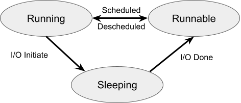
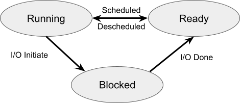
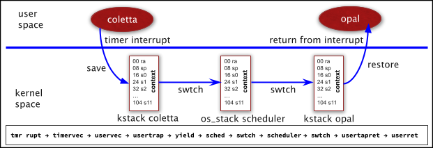
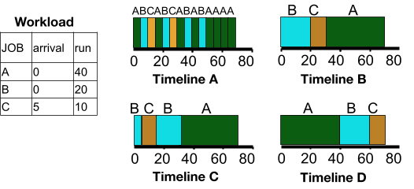

In this lab you will implement a priority scheduler for xv6.
Before you begin lab scheduling,
In this lab, there are several questions for you to answer. Questions are in boxes with a light orange background. Write each question and its answer in your notebook. Take photo(s) of your questions/answers and submit the photo(s) on Canvas. Additionally, in the directory of your xv6-labs, create the file: answers-scheduling.txt. You do not need to put answers in this file, but the grading script checks to see if this file exists. If it exists, I assume you have answered the questions in your notebook.
Fetch the xv6 source for the lab and check out the scheduling branch:
$ git fetch $ git checkout scheduling $ make clean
The files proc.h and proc.c contain the data structures and algorithms used to implement Xv6's process model. The data structure struct proc defines process information that Xv6 uses. When performing Lab syscall, you added members to struct proc. For Lab Scheduling, I have added members to struct proc and code to proc.c.
#define SCHED_RR 0 // Round-Robin Scheduler #define SCHED_PRIOR 1 // Priority-Based Scheduler
The file proc.h defines the enumerated type procstate as follows.
enum procstate { UNUSED, USED, SLEEPING, RUNNABLE, RUNNING, ZOMBIE };
Processes have a state diagram that is summarized as follows.

The scheduling algorithm searches a list of Runnable processes, selects the next process to run, and runs it. Running a process involves a context switch, which is described in the next section. The scheduling algorithm performs both the Scheduled arrow and the Descheduled arrows. The arrow labeled Scheduled moves a process from Runnable to Running, while at the same time the arrow labeled Descheduled moves the Running process back to the list of Runnable processes.
You will notice that procstate defines three additional states UNUSED, USED, and ZOMBIE. An UNUSED proc is available to be allocated. A proc is temporarily in the USED state until it is finally aloocated when it becomes RUNNABLE.
1. Provide two examples of something a process can do that causes it to transition from RUNNING to SLEEPING.
2. Provide two example events that cause a process to transition from SLEEPING to RUNNABLE.
3. Look up what it means a Linux process to be in a ZOMBIE state. Write the answer and create a program that results in a process in a ZOMBIE state. Use the Xv6 ctrl-p command to demonstrate your program results in a process that is in the ZOMBIE state. Since the program is such a few line, hand write the code in your notebook.
Another terminology for process states is Running, Ready, and Blocked. OS Three Easy Pieces uses this terminology. The following is a process state transition diagram using these terms.

Xv6 supports a maximum 64 concurrent processes, and they are defined in the array struct proc proc[NPROC]; where param.h contains #define NPROC 64, and proc.h contains the definition of a struct proc. struc proc has many members, one of which is enum procstate state;. The function procinit() in proc.c initializes all of the struct proc elements in the array proc[] to UNUSED. An allocated process (allocproc() is briefly in the USED state until it is made RUNNABLE.
4. Why do you think allocproc() used the intermediate state USED? You will have to examine the code to answer this.
The Xv6 scheduler() iterates through the struct proc proc[] array searching for a RUNNABLE process. Once the scheduling algorithm selects a RUNNABLE process, Xv6 performs a context switch from the scheduler to the selected process. Context switches are a key component in operating systems. A timer interrupt causes the scheduling algorithm to run. Consider that the OS is currenting executing process Coletta when a timer interrupt occurs. First a context switch from Coletta to the scheduler must occur. Then, after the scheduler has selected Opal to run, a context switch from the scheduler to Opal must occur. Once Xv6 has booted, the scheduler enters an endless loop searching for RUNNABLE processes and performing context switches to them. The scheduler runs in kernel mode. Xv6 creates the initproc, and the scheduler runs it (i.e., performs a context swithc). The initproc creates the sh (shell) process, and the scheduler runs it. The shell allows you to enter commands. The shell forks these commands as processes. Each command is a program. The shell performs a two step seqence for each command.
The following diagrams displays a context switch from a process Coletta to a process Opal.

There is a lot to digest in the above simple-looking context switch diagram. The process Coletta is running in user mode, when a timer interrupt occurs, which is the OS interrupt used for a context switch. On the RISCV architecture, the timer interrupt is immediately processed in machine mode by timervec() (in kernelvec.S), which issues a software interrupt that is processed by uservec() (in trampoline.S). The RISCV CPU is now in supervisor mode, but the CPU is still using the page table of Coletta - not the OS page table. The code for uservec() is on the trampoline page, which is mapped in each user proc's page table. Coletta's trampoline page is marked to allow execution in supervisor mode. To refresh your memory on memory layout, you can examine memlayout.h and Figure 3.3 of our xv6 text book, which was part of our page table studies. Having the trampoline page mapped to Coletta's page table allows uservec() to begin executing in supervisor mode prior to changin to the OS page table, which also maps the trampoline page to the same address. Thus uservec() can switch to the OS page table and continue executing the trampoline code. Before switching to the OS page table, uservec saves all registers in Coletta's TRAPFRAME. Each process has a unique physical page allocated as its TRAPFRAME. Each process's TRAPFRAME mapped to the same virtual address, which allows uservec() to save the registers. The process's struc proc member p->trapframe points to the trapframe with its physical address, which allows the kernel to access the process's TRAPFRAME using the kernel page table.
5. Explain the processing of a timer interrupt in your own words.
6. uservec() in trampoline.S begins execution using a process page table and transitions to the OS page table.
7. Draw Figure 3-4 from our xv6 text book in your notebook.
The Xv6 function scheduler() in the file proc.c implements a round robin scheduler.
8. Explain how the algorithm in scheduler() implements a round robin scheduler. NOTE: The answer is a little trickier than you may think.
You will implement a priority scheduler.
9. Create a design for your priority scheduler. You must complete this before you begin implementing the code for your priority scheduler.
$ testschd 20 3 31
The testschd.c program calls the system call function spoon(), which is exactly like fork(), but spoon() allows you to name the function. The function name is copied into the struct proc member name. Without spoon() all of the processes of testsched would have the name of their parent - e.g., they would be named testschd.
You must implement spoon() before testschd.c will run. Or you can change the calls to spoon to be calls to fork.
Xv6 provides a ctrl-p that shows processes and their states. ctrl-p is similar to
Linux ps command.
You can enter ctrl-p at any time and it displays
The following shows entering ctrl-p while testschd is running. The display shows the
processes pid, priority, state, and name. Notice the various states of sleep, runble,
and run. This was done on a Xv6 build with CPUS=1 so there is only one process in
the state run. Also notice how Coletta and Opal alternated between states
run and runble.
10. Given the above two instanced of ctrl-p, what scheduler (round-robin or priority)
is running and why?
The version of the kernel provided with this lab has a system call prochist() that displays
the process history captured in the prochist[] circular buffer. You should examine the
implementation of prochist() to determine it calls the function prochistory(), which
is in proc.c. User programs can make the prochist() system call. Additionally,
you can connect ctrl-g to prochistory(). I have done this in my demonstration
version of Xv6. For this lab, you must do the same. Once you have implemented ctrl-g, you can enter it
at any time to view the process history, which shows the first line as
Q11. Explain in your own words how the circular buffer of process history is implemented.
Q12. The first line printed by the system call prochist() shows
various statistics.
You must implement the spoon() system call function.
The following shows running testschd using my priority scheduler.
If you examine the testschd.c code, you will see the parent calls the system
call - prochist() after the children are finished.
Items to notice in the printout.
Q13. Describe what would happen in a priority scheduler in the following scenario.
Q14. What happens when you run your priority scheduler on the normal build, which has four CPUs?
The normal build is created by
Update Xv6 such that entering ctrl-g from the keyboard displays the process history.
Once you have completed this, you can enter ctrl-g to see the process history at anytime just like you can
enter ctrl-p at anytime to the processes and their states.
Q15. What kernel .c file contains the code for processing
ctrl-p and ctrl-g?
Update Xv6 to include two systems calls: setpriority and getpriority.
From the user program perspective, the function protypes are
When a process calls setpriority, the argument passed is placed in the member
priority of its struct proc.
When a process calls getpriority, the value in the the member
priority of its struct proc is returned.
Update Xv6 to include a int spoon(char*) system call.
Update Xv6 to include a priority scheduler with the follwoing attributes.
Q16. After you have finished your priority scheduler, run
Examine
Scheduler Tester - ctrl-p for a sample of what you should see.
The following diagram shows various scheduling algorithms. You will select a Timeline in your answers to questions below.

Q17. Describe a FIFO scheduler. Use a Timeline from the above diagram as part of your description.
Q18. Describe a shortest job first scheduler. Use a Timeline from the above diagram as part of your description.
Q19. Describe a shortest time to completion scheduler. Use a Timeline from the above diagram as part of your description.
Q20. Describe a multi-level feedback queue scheduler.
Q21. Describe a Linux completely fair scheduler.
This completes the lab.
Read Lab Submissions for instructions on how
to submit your lab; however, you do not copy/paste the output of make grade
into your lab-scheduling-handin.txt file because Lab Scheduling does not have the make
grade tests because the output of testsched varies slightly.
Scheduler Tester - ctrl-p
proc_id priority state name
$ testschd
ctrl-p
1 0 sleep init
2 0 sleep sh
3 100 sleep testschd
4 50 runble Coletta
5 51 run Opal
6 52 runble Florence
ctrl-p
1 0 sleep init
2 0 sleep sh
3 100 sleep testschd
4 50 run Coletta
5 51 runble Opal
6 52 runble Florence
Scheduler Tester - ctrl-g
Tmr Rupts: 250, Sch Loops: 212295, Swtch Run: 210, Swtch New: 13, Switch Old: 182, Swtch sh: 15
Followed by a sequence of lines, each of which contains
index: cpu proc_id priority name priority
Sample testschd.c Output for Round-Robin Scheduler
The following shows running testschd using the Xv6 round-robin scheduler.
If you examine the testschd.c code, you will see the parent calls the system
call - prochist() after the children are finished.
Items to notice in the printout.
$
Sample testschd.c Output for Priority Scheduler
$ testschd
Parent Sleeping - let children get priorities set.
Child Coletta:4, priority 0!
Child Coletta:4, priority 50!
Child Opal:5, priority 0!
Child Opal:5, priority 51!
Child Florence:6, priority 0!
Child Florence:6, priority 52!
Starting child Coletta:4
Starting child Opal:5
Starting child Florence:6
Child Florence:6 with priority 52 has finished!
Child Opal:5 with priority 51 has finished!
Child Coletta:4 with priority 50 has finished!
All children have finished!
Tmr Rupts: 224, Sch Loops: 121268, Swtch Run: 238, Swtch New: 15, Switch Old: 209, Swtch sh: 14
0: 0 1 initcode 0
1: 0 2 init 0
2: 0 3 testschd 0
3: 0 4 Coletta 0
4: 0 5 Opal 0
5: 0 6 Florence 0
6: 0 3 testschd 100
7: 0 6 Florence 52
8: 0 3 testschd 100
9: 0 6 Florence 52
10: 0 3 testschd 100
11: 0 5 Opal 51
12: 0 3 testschd 100
13: 0 4 Coletta 50
14: 0 3 testschd 100
How to Make - make CPUS=1 qemu
To properly test your priority scheduler, you want to run it on one CPU. To do this,
$ make CPUS=1 qemu
$ make qemu
Implement ctrl-g
Some Hints
Implement the setpriority/getpriority System Calls
int setpriority(int);
int getpriority(void);
Some Hints
Implement the spoon() System Call
Some Hints
Implement a Priority Scheduler
else if (scheduler_policy == SCHED_PRIOR) {
YOUR CODE HERE
}
Currently this block contains a duplication of the round-robin scheduler.
Some Hints
$ testschd
and enter ctrl-p several times to demonstrate processes and their states.
Submit the lab